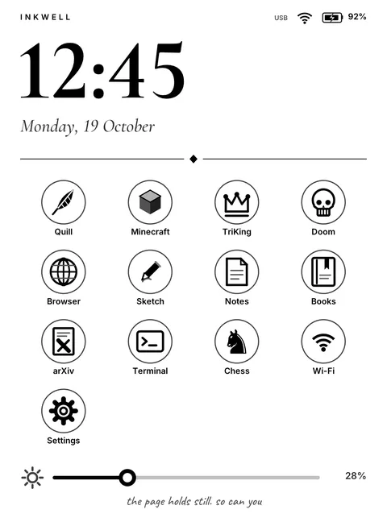
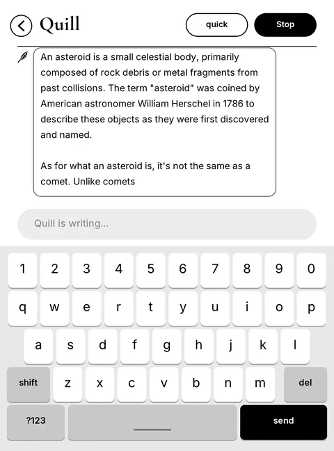

Inkwell
My 10-year-old Kindle now runs its own Linux, with Doom, a web browser and Quill, a chatbot that never touches the internet.
- One 1 GHz core and 512 MB of RAM, and the whole system runs in about 40 MB
- Doom runs at about 5 FPS, which on e-ink counts as fast
- Featured on Hackaday, November 2026
October 2026I jailbroke my Kindle Paperwhite 3 on 11 October 2026 and then wanted the whole software stack to be mine. Amazon still supplies the kernel, and everything above it is Inkwell.

